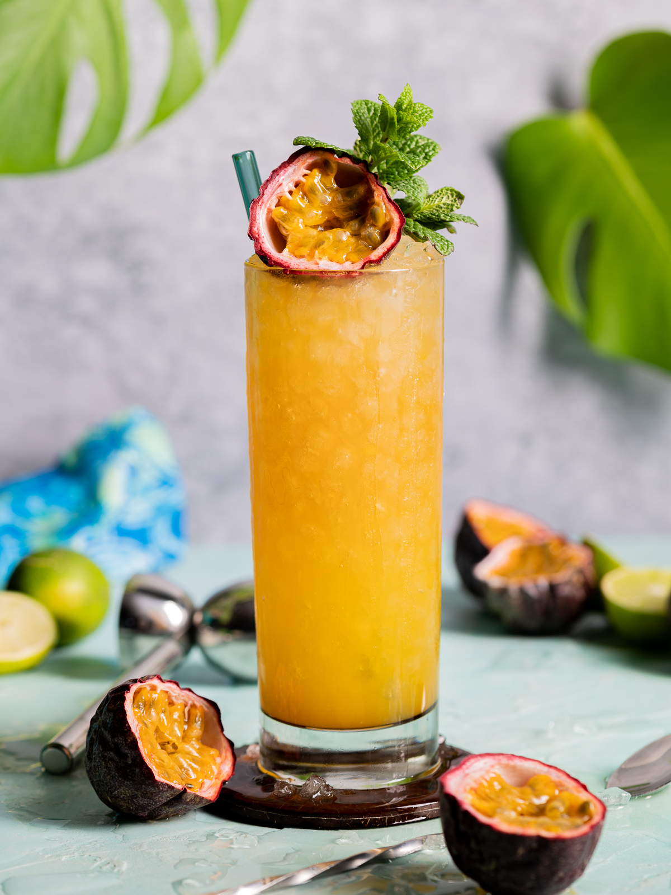

Passion fruit swizzle

Description
A swizzle cocktail is a sweet and sour rum based tiki drink, served over crushed or pebble ice, often in a tall collins or a sling cocktail glass, various tropical fruits in juice or syrup form, some citrus, a bitter element and of course garnishes.
A swizzle cocktail is always mixed together with a swizzle stick or a long cocktail spoon in a twisting or swizzling motion from the bottom to the top of the glass to ensure the cocktail is mixed perfectly.
Ingredients
- Rum
- Fresh passionfruit juice
- Citrus
- Any simple syrup
- Bitter element: any bitter liqueur(Aperol, Bruto Americano etc.)
Steps
- Fill a glass with pebble ice and start layering the drink.
- Add a rum of choice to the ice.
- Use fresh passion fruit juice to the drink(or any other juice if other flavours are preferred).
- Cut a fresh lime in half. Squeeze one half into the drink and store the other half for decoration.
- Add the simple syrup and choice of bitter liqueur to the drink.
- Use a swizzle stick or long cocktail spoon and use a twisting motion to mix the drink well. Move the spoon from top to bottom while mixing to ensure even mix.
- Top off the drink with more ice and dash of liqueur for a hint of bitterness.
- Finally, add any preferred garnishes on top of the drink and stick the remaining half of lemon to the glass